2025 Advanced Higher Chemistry - Paper 2 questions
Source: Scottish Qualifications Authority (SQA) / Qualifications Scotland. This is a StemInteract HTML companion, not an official HTML edition. Selectable text is supplied alongside original page images. Use the images or original PDF for equations, powers, fractions, vector notation, tables and diagrams; text extraction cannot fully preserve mathematical layout.
Jump to a question
PDF page 1
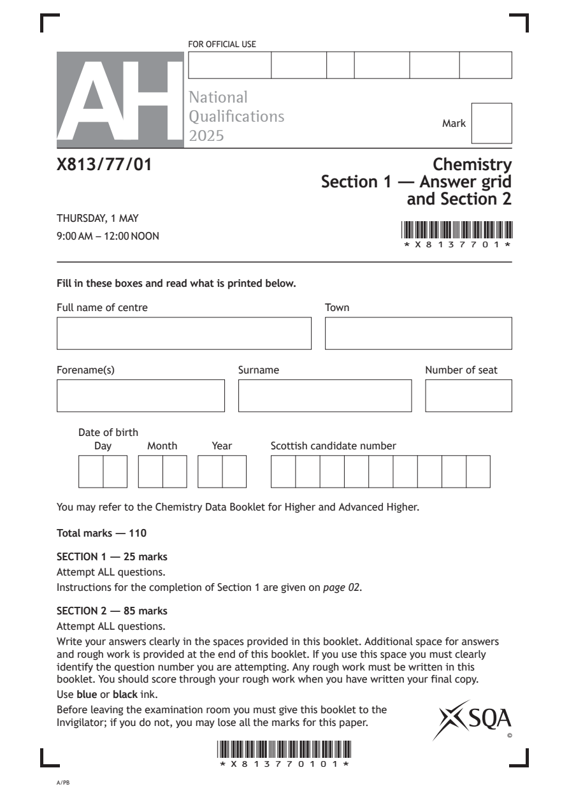
Selectable page text
FOR OFFICIAL USE
AH
National
Qualications
Mark
2025
X813/77/01 Chemistry
Section 1 — Answer grid
and Section 2
THURSDAY, 1 MAY
9:00 AM – 12:00 NOON
*X8137701*
Fill in these boxes and read what is printed below.
Full name of centre Town
Forename(s) Surname Number of seat
Date of birth
Day Month Year Scottish candidate number
You may refer to the Chemistry Data Booklet for Higher and Advanced Higher.
Total marks — 110
SECTION 1 — 25 marks
Attempt ALL questions.
Instructions for the completion of Section 1 are given on page 02.
SECTION 2 — 85 marks
Attempt ALL questions.
Write your answers clearly in the spaces provided in this booklet. Additional space for answers
and rough work is provided at the end of this booklet. If you use this space you must clearly
identify the question number you are attempting. Any rough work must be written in this
booklet. You should score through your rough work when you have written your final copy.
Use blue or black ink.
Before leaving the examination room you must give this booklet to the
Invigilator; if you do not, you may lose all the marks for this paper.
©
*X813770101*
A/PBPDF page 2
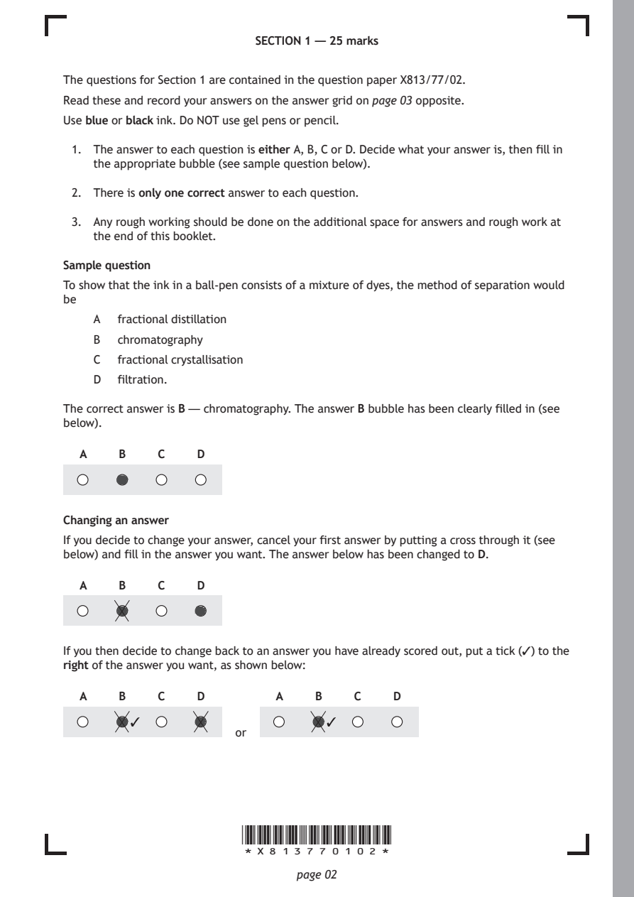
Selectable page text
SECTION 1 — 25 marks
The questions for Section 1 are contained in the question paper X813/77/02.
Read these and record your answers on the answer grid on page 03 opposite.
Use blue or black ink. Do NOT use gel pens or pencil.
1. The answer to each question is either A, B, C or D. Decide what your answer is, then fill in
the appropriate bubble (see sample question below).
2. There is only one correct answer to each question.
3. Any rough working should be done on the additional space for answers and rough work at
the end of this booklet.
Sample question
To show that the ink in a ball-pen consists of a mixture of dyes, the method of separation would
be
A fractional distillation
B chromatography
C fractional crystallisation
D filtration.
The correct answer is B — chromatography. The answer B bubble has been clearly filled in (see
below).
A B C D
Changing an answer
If you decide to change your answer, cancel your first answer by putting a cross through it (see
below) and fill in the answer you want. The answer below has been changed to D.
A B C D
If you then decide to change back to an answer you have already scored out, put a tick (✓) to the
right of the answer you want, as shown below:
A B C D A B C D
or
*X813770102*
page 02PDF page 3

Selectable page text
SECTION 1 — Answer grid
*OBJ25AD1*
A B C D
1
2
3
4
5
6
7
8
9
10
11
12
13
14
15
16
17
18
19
20
21
22
23
24
25
*X813770103*
page 03 [Turn overPDF page 4
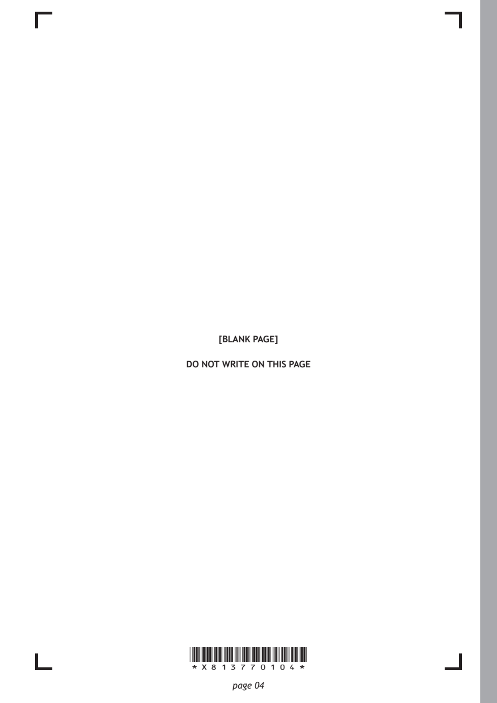
Selectable page text
[BLANK PAGE]
DO NOT WRITE ON THIS PAGE
*X813770104*
page 04PDF page 5
Paper 2, Question 1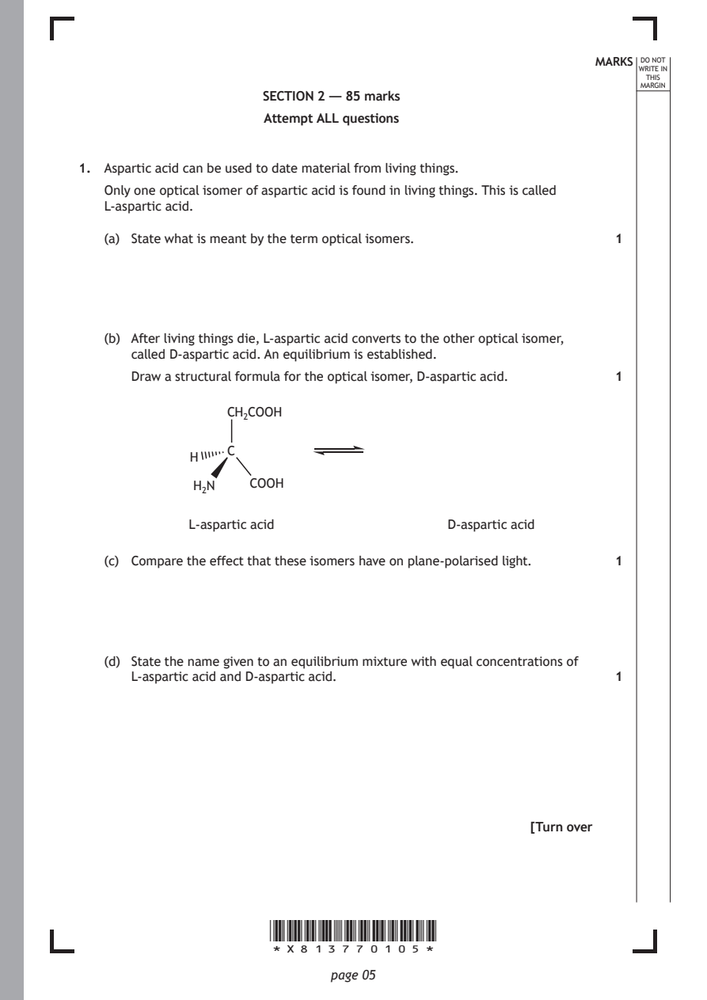
Selectable page text
MARKS _{W}^{D}_{R}^{O}_{I} _{T}^{N}OT
E IN
THIS
MARGIN
SECTION 2 — 85 marks
Attempt ALL questions
1. Aspartic acid can be used to date material from living things.
Only one optical isomer of aspartic acid is found in living things. This is called
L-aspartic acid.
(a) State what is meant by the term optical isomers. 1
(b) After living things die, L-aspartic acid converts to the other optical isomer,
called D-aspartic acid. An equilibrium is established.
Draw a structural formula for the optical isomer, D-aspartic acid. 1
CH₂COOH
C
H
H₂N COOH
L-aspartic acid D-aspartic acid
(c) Compare the effect that these isomers have on plane-polarised light. 1
(d) State the name given to an equilibrium mixture with equal concentrations of
L-aspartic acid and D-aspartic acid. 1
[Turn over
*X813770105*
page 05PDF page 6
Paper 2, Question 2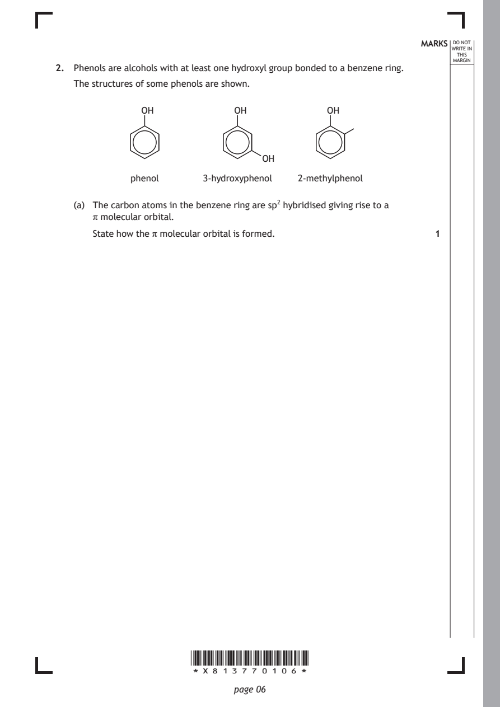
Selectable page text
MARKS _{W}^{D}_{R}^{O}_{I} _{T}^{N}OT
E IN
THIS
MARGIN
2. Phenols are alcohols with at least one hydroxyl group bonded to a benzene ring.
The structures of some phenols are shown.
OH OH OH
OH
phenol 3-hydroxyphenol 2-methylphenol
(a) The carbon atoms in the benzene ring are sp² hybridised giving rise to a
π molecular orbital.
State how the π molecular orbital is formed. 1
*X813770106*
page 06PDF page 7
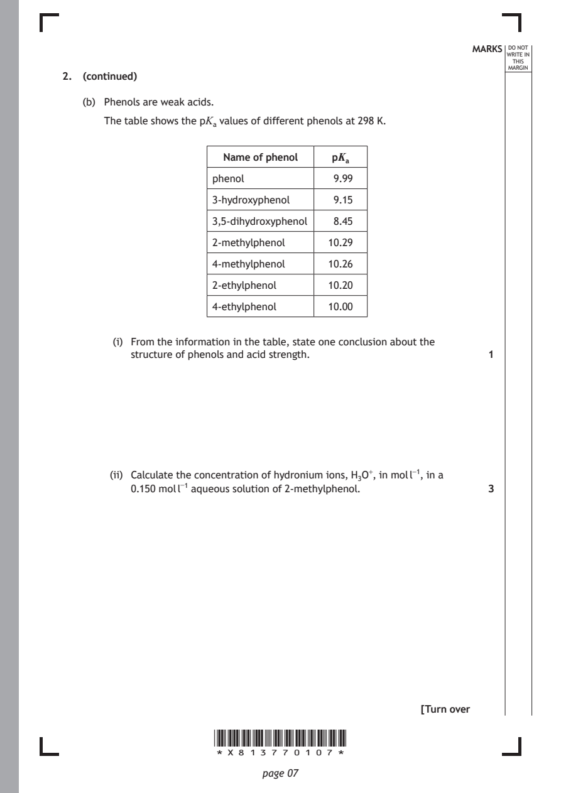
Selectable page text
MARKS _{W}^{D}_{R}^{O}_{I} _{T}^{N}OT
E IN
THIS
MARGIN
2. (continued)
(b) Phenols are weak acids.
The table shows the pKₐ values of different phenols at 298 K.
Name of phenol pKₐ
phenol 9.99
3-hydroxyphenol 9.15
3,5-dihydroxyphenol 8.45
2-methylphenol 10.29
4-methylphenol 10.26
2-ethylphenol 10.20
4-ethylphenol 10.00
(i) From the information in the table, state one conclusion about the
structure of phenols and acid strength. 1
(ii) Calculate the concentration of hydronium ions, H₃O⁺, in mol l⁻¹, in a
0.150 mol l⁻¹ aqueous solution of 2-methylphenol. 3
[Turn over
*X813770107*
page 07PDF page 8
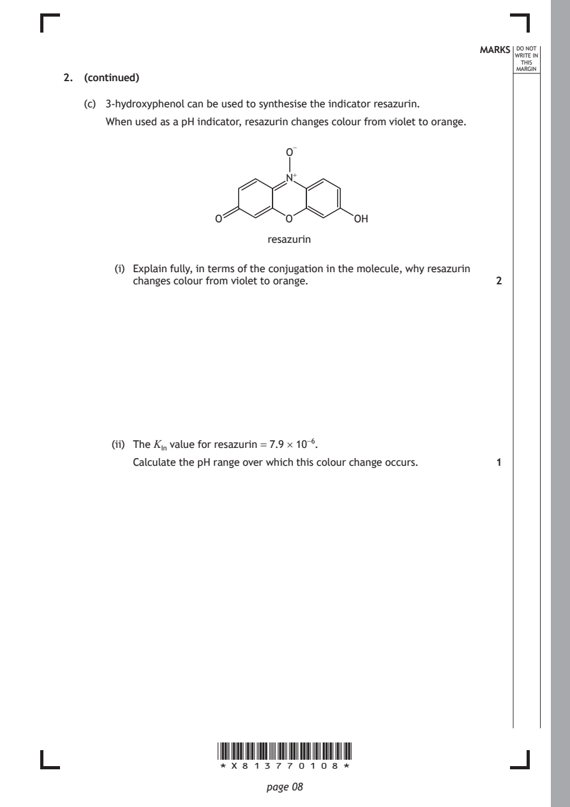
Selectable page text
MARKS _{W}^{D}_{R}^{O}_{I} _{T}^{N}OT
E IN
THIS
MARGIN
2. (continued)
(c) 3-hydroxyphenol can be used to synthesise the indicator resazurin.
When used as a pH indicator, resazurin changes colour from violet to orange.
O^{_}
N⁺
O O OH
resazurin
(i) Explain fully, in terms of the conjugation in the molecule, why resazurin
changes colour from violet to orange. 2
(ii) The K_{I}ₙ value for resazurin = 7.9 × 10⁻⁶.
Calculate the pH range over which this colour change occurs. 1
*X813770108*
page 08PDF page 9
Paper 2, Question 3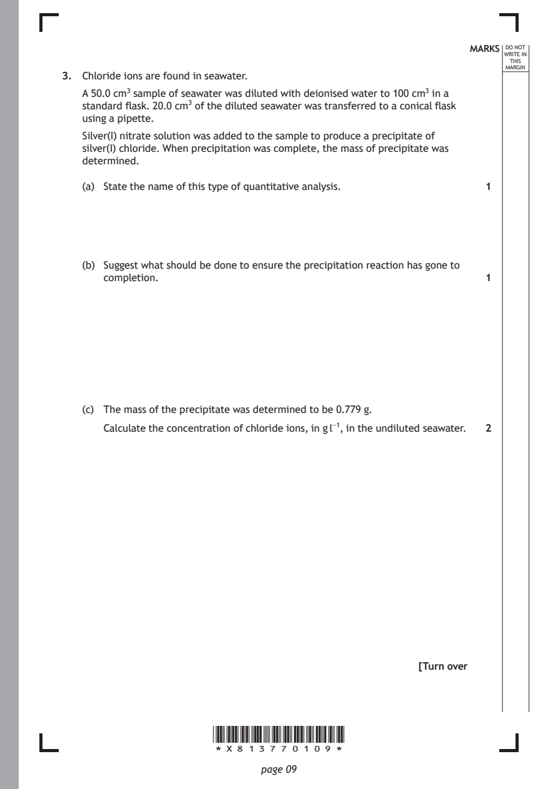
Selectable page text
MARKS _{W}^{D}_{R}^{O}_{I} _{T}^{N}OT
E IN
THIS
MARGIN
3. Chloride ions are found in seawater.
A 50.0 cm³ sample of seawater was diluted with deionised water to 100 cm³ in a
standard flask. 20.0 cm³ of the diluted seawater was transferred to a conical flask
using a pipette.
Silver(I) nitrate solution was added to the sample to produce a precipitate of
silver(I) chloride. When precipitation was complete, the mass of precipitate was
determined.
(a) State the name of this type of quantitative analysis. 1
(b) Suggest what should be done to ensure the precipitation reaction has gone to
completion. 1
(c) The mass of the precipitate was determined to be 0.779 g.
Calculate the concentration of chloride ions, in g l⁻¹, in the undiluted seawater. 2
[Turn over
*X813770109*
page 09PDF page 10
Paper 2, Question 4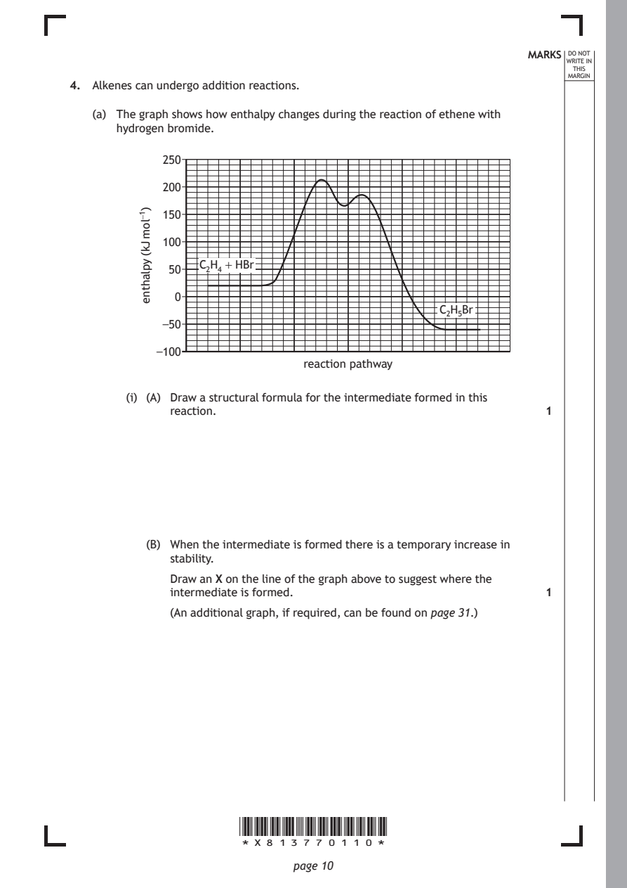
Selectable page text
MARKS _{W}^{D}_{R}^{O}_{I} _{T}^{N}OT
E IN
THIS
MARGIN
4. Alkenes can undergo addition reactions.
(a) The graph shows how enthalpy changes during the reaction of ethene with
hydrogen bromide.
C₂H₄ + HBr
C₂H₅Br
reaction pathway
*X813770110*
page 10
_
)1
lomJk(
yplahtne
250
200
150
100
50
0
_
50
_
100
(i) (A) Draw a structural formula for the intermediate formed in this
reaction. 1
(B) When the intermediate is formed there is a temporary increase in
stability.
Draw an X on the line of the graph above to suggest where the
intermediate is formed. 1
(An additional graph, if required, can be found on page 31.)PDF page 11
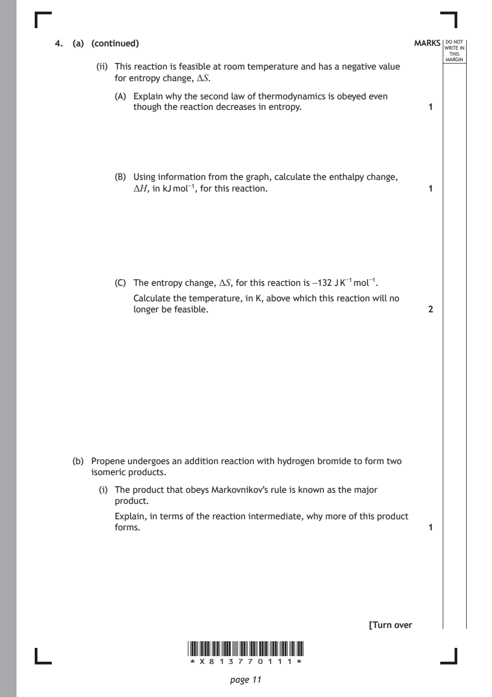
Selectable page text
4. (a) (continued) MARKS _{W}^{D}_{R}^{O}_{I} _{T}^{N}OT
E IN
THIS
MARGIN
(ii) This reaction is feasible at room temperature and has a negative value
for entropy change, ΔS.
(A) Explain why the second law of thermodynamics is obeyed even
though the reaction decreases in entropy. 1
(B) Using information from the graph, calculate the enthalpy change,
ΔH, in kJ mol⁻¹, for this reaction. 1
(C) The entropy change, ΔS, for this reaction is -132 J K⁻¹ mol⁻¹.
Calculate the temperature, in K, above which this reaction will no
longer be feasible. 2
(b) Propene undergoes an addition reaction with hydrogen bromide to form two
isomeric products.
(i) The product that obeys Markovnikov’s rule is known as the major
product.
Explain, in terms of the reaction intermediate, why more of this product
forms. 1
[Turn over
*X813770111*
page 11PDF page 12
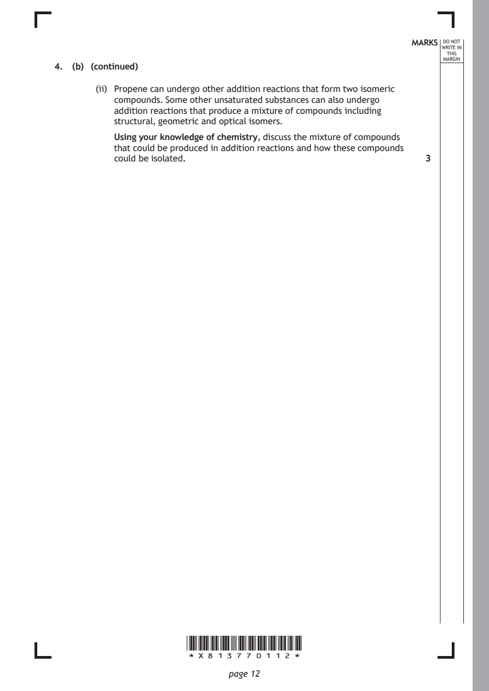
Selectable page text
MARKS _{W}^{D}_{R}^{O}_{I} _{T}^{N}OT
E IN
THIS
MARGIN
4. (b) (continued)
(ii) Propene can undergo other addition reactions that form two isomeric
compounds. Some other unsaturated substances can also undergo
addition reactions that produce a mixture of compounds including
structural, geometric and optical isomers.
Using your knowledge of chemistry, discuss the mixture of compounds
that could be produced in addition reactions and how these compounds
could be isolated. 3
*X813770112*
page 12PDF page 13
Paper 2, Question 5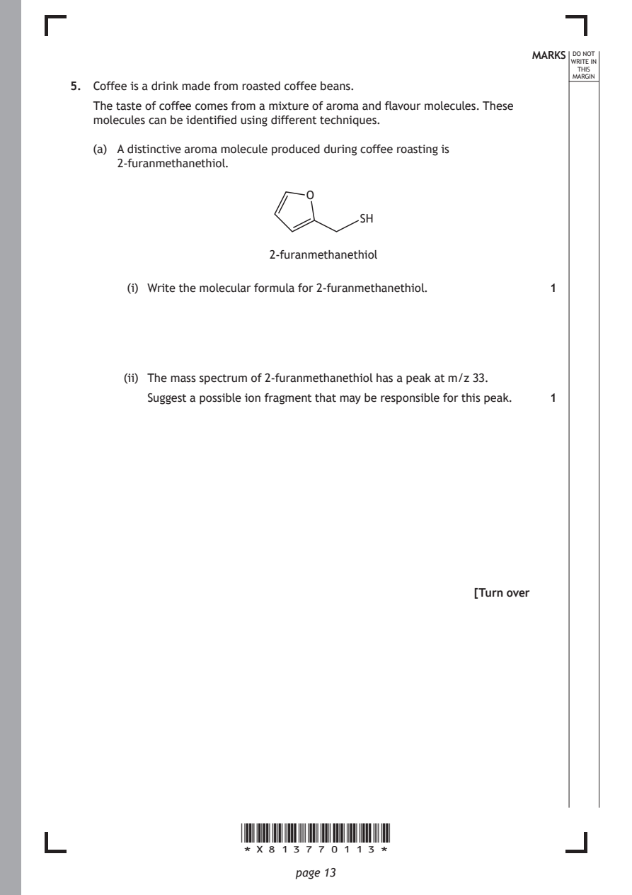
Selectable page text
MARKS _{W}^{D}_{R}^{O}_{I} _{T}^{N}OT
E IN
THIS
MARGIN
5. Coffee is a drink made from roasted coffee beans.
The taste of coffee comes from a mixture of aroma and flavour molecules. These
molecules can be identified using different techniques.
(a) A distinctive aroma molecule produced during coffee roasting is
2-furanmethanethiol.
O
SH
2-furanmethanethiol
(i) Write the molecular formula for 2-furanmethanethiol. 1
(ii) The mass spectrum of 2-furanmethanethiol has a peak at m/z 33.
Suggest a possible ion fragment that may be responsible for this peak. 1
[Turn over
*X813770113*
page 13PDF page 14
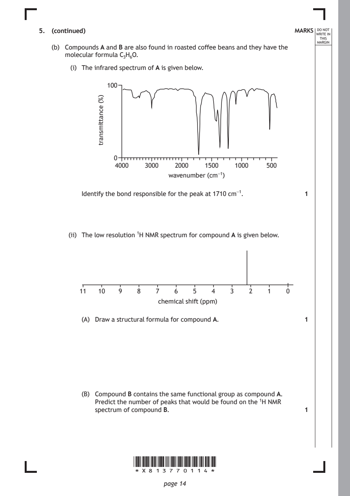
Selectable page text
5. (continued) MARKS _{W}^{D}_{R}^{O}_{I} _{T}^{N}OT
E IN
THIS
MARGIN
(b) Compounds A and B are also found in roasted coffee beans and they have the
molecular formula C₃H₆O.
(i) The infrared spectrum of A is given below.
4000
*X813770114*
page 14
)%(
ecnattimsnart
100
0
3000 2000 1500 1000 500
wavenumber (cm⁻¹)
Identify the bond responsible for the peak at 1710 cm⁻¹. 1
(ii) The low resolution ¹H NMR spectrum for compound A is given below.
11 10 9 8 7 6 5 4 3 2 1 0
chemical shift (ppm)
(A) Draw a structural formula for compound A. 1
(B) Compound B contains the same functional group as compound A.
Predict the number of peaks that would be found on the ¹H NMR
spectrum of compound B. 1PDF page 15
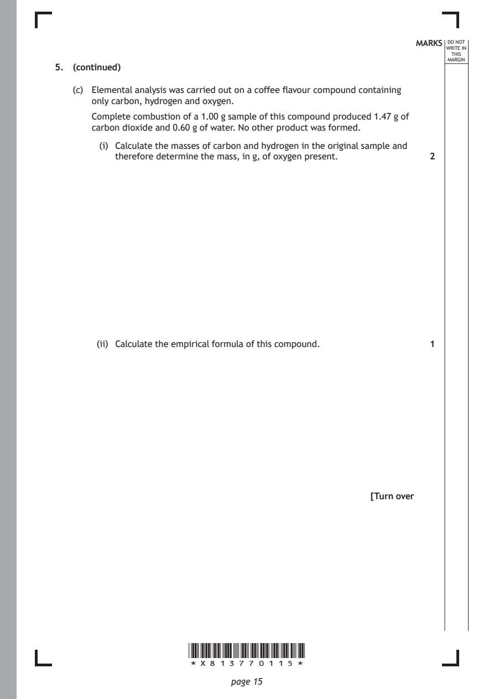
Selectable page text
MARKS _{W}^{D}_{R}^{O}_{I} _{T}^{N}OT
E IN
THIS
MARGIN
5. (continued)
(c) Elemental analysis was carried out on a coffee flavour compound containing
only carbon, hydrogen and oxygen.
Complete combustion of a 1.00 g sample of this compound produced 1.47 g of
carbon dioxide and 0.60 g of water. No other product was formed.
(i) Calculate the masses of carbon and hydrogen in the original sample and
therefore determine the mass, in g, of oxygen present. 2
(ii) Calculate the empirical formula of this compound. 1
[Turn over
*X813770115*
page 15PDF page 16
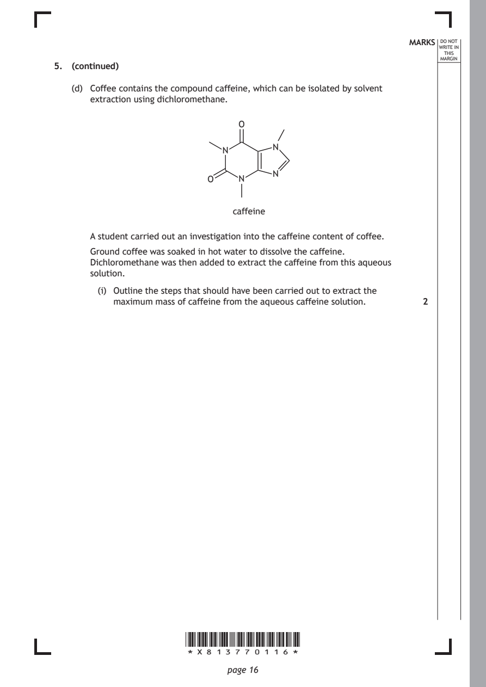
Selectable page text
MARKS _{W}^{D}_{R}^{O}_{I} _{T}^{N}OT
E IN
THIS
MARGIN
5. (continued)
(d) Coffee contains the compound caffeine, which can be isolated by solvent
extraction using dichloromethane.
*X813770116*
page 16
O
N
N
N
O N
caffeine
A student carried out an investigation into the caffeine content of coffee.
Ground coffee was soaked in hot water to dissolve the caffeine.
Dichloromethane was then added to extract the caffeine from this aqueous
solution.
(i) Outline the steps that should have been carried out to extract the
maximum mass of caffeine from the aqueous caffeine solution. 2PDF page 17
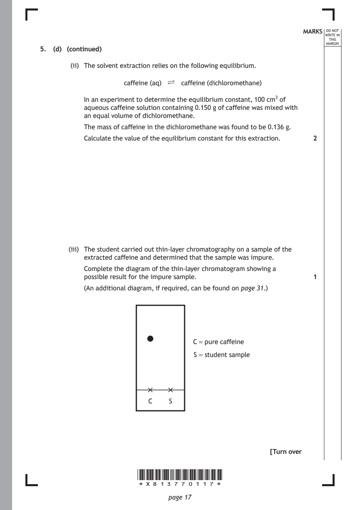
Selectable page text
MARKS _{W}^{D}_{R}^{O}_{I} _{T}^{N}OT
E IN
THIS
MARGIN
5. (d) (continued)
(ii) The solvent extraction relies on the following equilibrium.
caffeine (aq) ∏ caffeine (dichloromethane)
In an experiment to determine the equilibrium constant, 100 cm³ of
aqueous caffeine solution containing 0.150 g of caffeine was mixed with
an equal volume of dichloromethane.
The mass of caffeine in the dichloromethane was found to be 0.136 g.
Calculate the value of the equilibrium constant for this extraction. 2
(iii) The student carried out thin-layer chromatography on a sample of the
extracted caffeine and determined that the sample was impure.
Complete the diagram of the thin-layer chromatogram showing a
possible result for the impure sample. 1
(An additional diagram, if required, can be found on page 31.)
C = pure caffeine
S = student sample
C S
[Turn over
*X813770117*
page 17PDF page 18
Paper 2, Question 6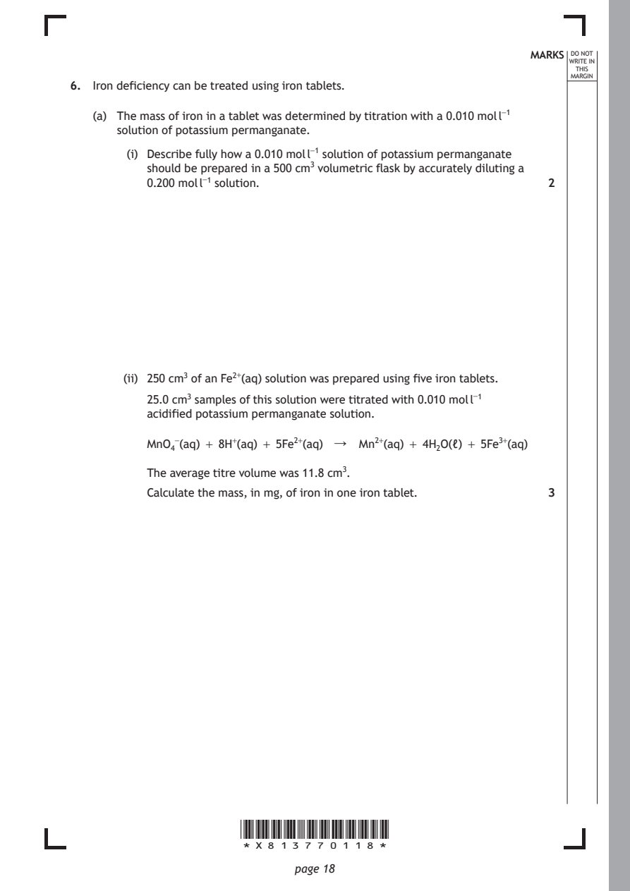
Selectable page text
MARKS _{W}^{D}_{R}^{O}_{I} _{T}^{N}OT
E IN
THIS
MARGIN
6. Iron deficiency can be treated using iron tablets.
(a) The mass of iron in a tablet was determined by titration with a 0.010 mol l⁻¹
solution of potassium permanganate.
(i) Describe fully how a 0.010 mol l⁻¹ solution of potassium permanganate
should be prepared in a 500 cm³ volumetric flask by accurately diluting a
0.200 mol l⁻¹ solution. 2
(ii) 250 cm³ of an Fe²⁺(aq) solution was prepared using five iron tablets.
25.0 cm³ samples of this solution were titrated with 0.010 mol l⁻¹
acidified potassium permanganate solution.
MnO₄⁻(aq) + 8H⁺(aq) + 5Fe²⁺(aq) ↓ Mn²⁺(aq) + 4H₂O(ℓ) + 5Fe³⁺(aq)
The average titre volume was 11.8 cm³.
Calculate the mass, in mg, of iron in one iron tablet. 3
*X813770118*
page 18PDF page 19
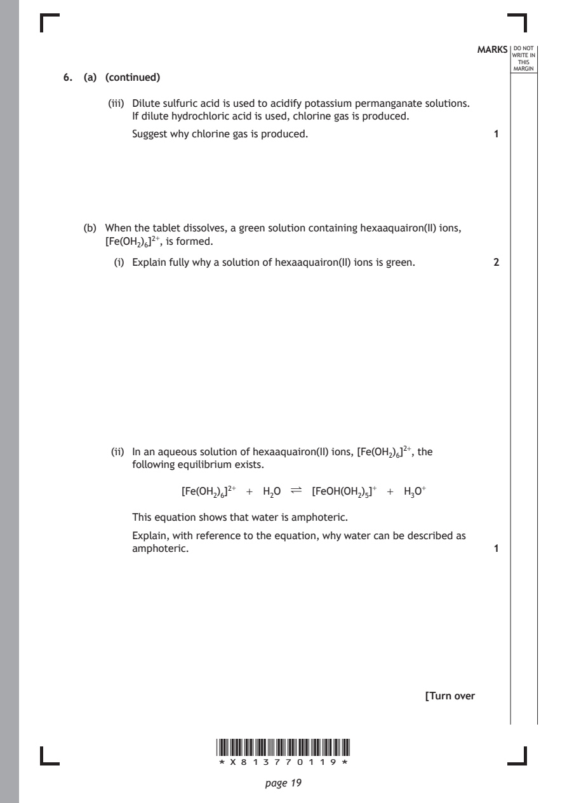
Selectable page text
MARKS _{W}^{D}_{R}^{O}_{I} _{T}^{N}OT
E IN
THIS
MARGIN
6. (a) (continued)
(iii) Dilute sulfuric acid is used to acidify potassium permanganate solutions.
If dilute hydrochloric acid is used, chlorine gas is produced.
Suggest why chlorine gas is produced. 1
(b) When the tablet dissolves, a green solution containing hexaaquairon(II) ions,
[Fe(OH₂)₆]²+, is formed.
(i) Explain fully why a solution of hexaaquairon(II) ions is green. 2
(ii) In an aqueous solution of hexaaquairon(II) ions, [Fe(OH₂)₆]²+, the
following equilibrium exists.
[Fe(OH₂)₆]²+ + H₂O ∏ [FeOH(OH₂)₅]⁺ + H₃O⁺
This equation shows that water is amphoteric.
Explain, with reference to the equation, why water can be described as
amphoteric. 1
[Turn over
*X813770119*
page 19PDF page 20
Paper 2, Question 7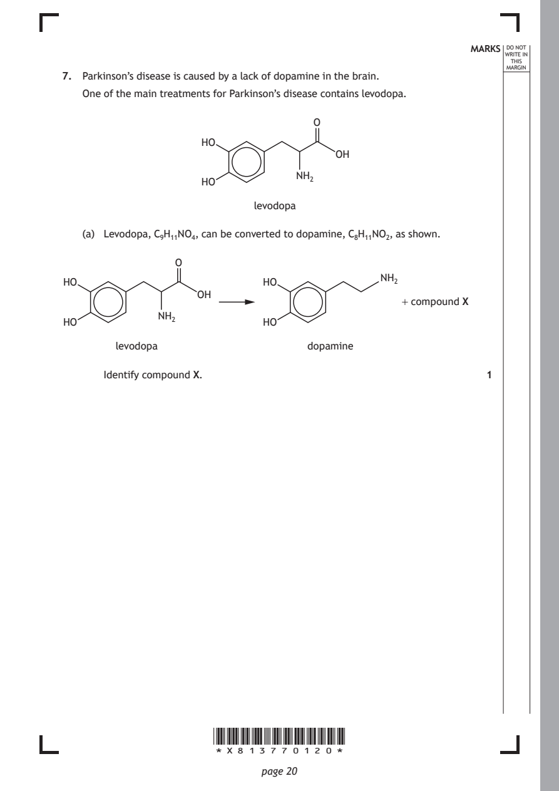
Selectable page text
MARKS _{W}^{D}_{R}^{O}_{I} _{T}^{N}OT
E IN
THIS
MARGIN
7. Parkinson’s disease is caused by a lack of dopamine in the brain.
One of the main treatments for Parkinson’s disease contains levodopa.
O
HO
OH
NH₂
HO
levodopa
(a) Levodopa, C₉H₁₁NO₄, can be converted to dopamine, C₈H₁₁NO₂, as shown.
O
NH₂
HO HO
OH
+ compound X
NH₂
HO HO
levodopa dopamine
Identify compound X. 1
*X813770120*
page 20PDF page 21
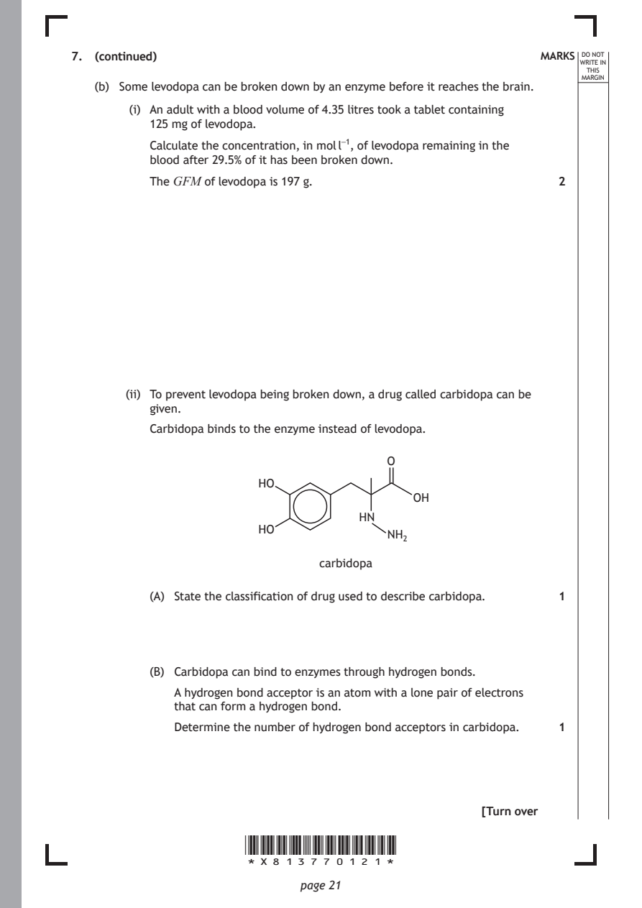
Selectable page text
7. (continued) MARKS _{W}^{D}_{R}^{O}_{I} _{T}^{N}OT
E IN
THIS
MARGIN
(b) Some levodopa can be broken down by an enzyme before it reaches the brain.
(i) An adult with a blood volume of 4.35 litres took a tablet containing
125 mg of levodopa.
Calculate the concentration, in mol l⁻¹, of levodopa remaining in the
blood after 29.5% of it has been broken down.
The GFM of levodopa is 197 g. 2
(ii) To prevent levodopa being broken down, a drug called carbidopa can be
given.
Carbidopa binds to the enzyme instead of levodopa.
O
HO
OH
HN
HO
NH₂
carbidopa
(A) State the classification of drug used to describe carbidopa. 1
(B) Carbidopa can bind to enzymes through hydrogen bonds.
A hydrogen bond acceptor is an atom with a lone pair of electrons
that can form a hydrogen bond.
Determine the number of hydrogen bond acceptors in carbidopa. 1
[Turn over
*X813770121*
page 21PDF page 22
Paper 2, Question 8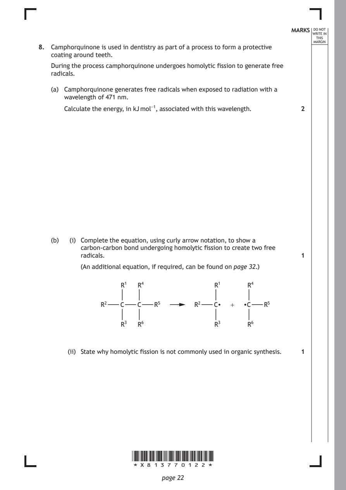
Selectable page text
MARKS _{W}^{D}_{R}^{O}_{I} _{T}^{N}OT
E IN
THIS
MARGIN
8. Camphorquinone is used in dentistry as part of a process to form a protective
coating around teeth.
During the process camphorquinone undergoes homolytic fission to generate free
radicals.
(a) Camphorquinone generates free radicals when exposed to radiation with a
wavelength of 471 nm.
Calculate the energy, in kJ mol⁻¹, associated with this wavelength. 2
(b) (i) Complete the equation, using curly arrow notation, to show a
carbon-carbon bond undergoing homolytic fission to create two free
radicals. 1
(An additional equation, if required, can be found on page 32.)
R¹ R⁴ R¹ R⁴
R² C C R⁵ R² C• + •C R⁵
R³ R⁶ R³ R⁶
(ii) State why homolytic fission is not commonly used in organic synthesis. 1
*X813770122*
page 22PDF page 23
Paper 2, Question 9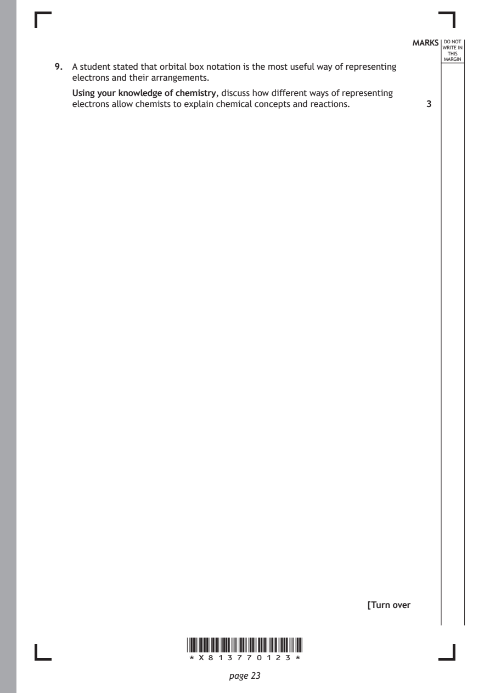
Selectable page text
MARKS _{W}^{D}_{R}^{O}_{I} _{T}^{N}OT
E IN
THIS
MARGIN
9. A student stated that orbital box notation is the most useful way of representing
electrons and their arrangements.
Using your knowledge of chemistry, discuss how different ways of representing
electrons allow chemists to explain chemical concepts and reactions. 3
[Turn over
*X813770123*
page 23PDF page 24
Paper 2, Question 10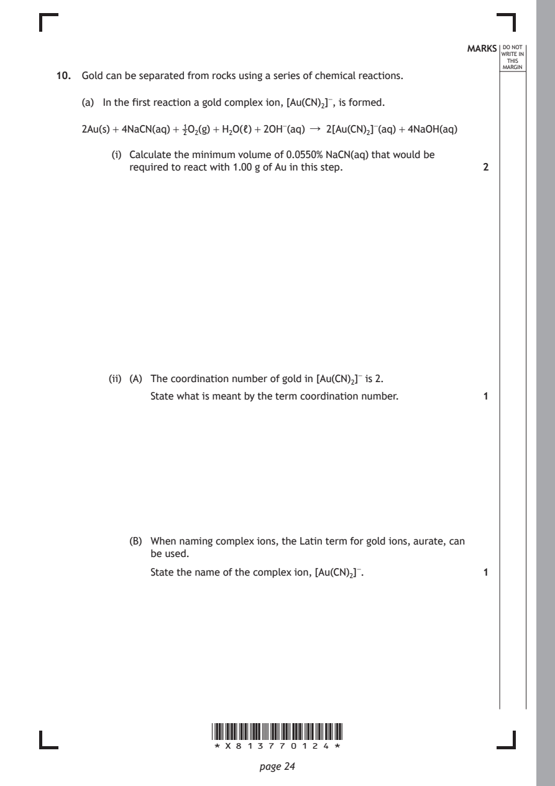
Selectable page text
MARKS _{W}^{D}_{R}^{O}_{I} _{T}^{N}OT
E IN
THIS
MARGIN
10. Gold can be separated from rocks using a series of chemical reactions.
(a) In the first reaction a gold complex ion, [Au(CN)₂]⁻, is formed.
2Au(s) + 4NaCN(aq) + 1O₂(g) + H₂O(ℓ) + 2OH⁻(aq) ↓ 2[Au(CN)₂]⁻(aq) + 4NaOH(aq)
2
(i) Calculate the minimum volume of 0.0550% NaCN(aq) that would be
required to react with 1.00 g of Au in this step. 2
(ii) (A) The coordination number of gold in [Au(CN)₂]⁻ is 2.
State what is meant by the term coordination number. 1
(B) When naming complex ions, the Latin term for gold ions, aurate, can
be used.
State the name of the complex ion, [Au(CN)₂]⁻. 1
*X813770124*
page 24PDF page 25
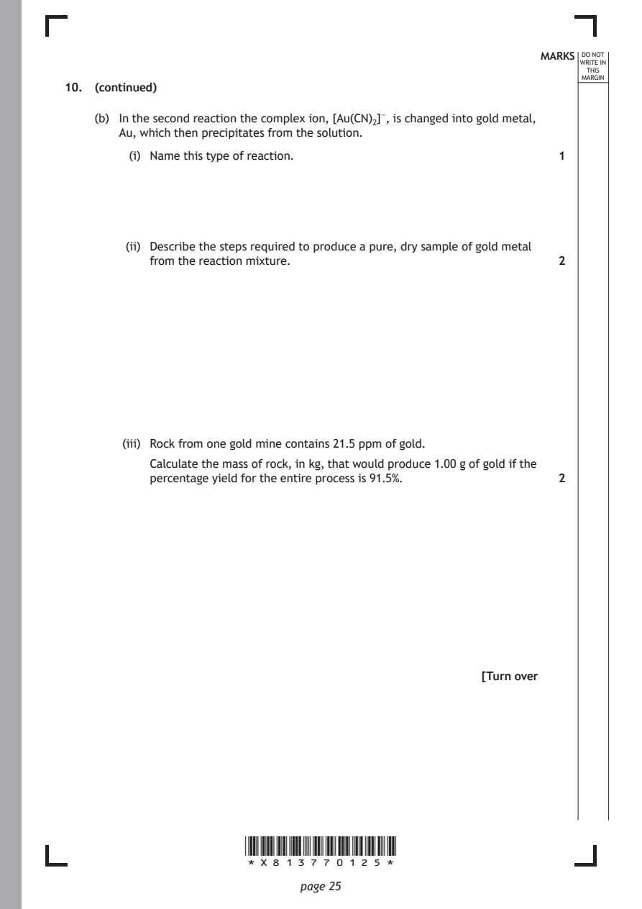
Selectable page text
MARKS _{W}^{D}_{R}^{O}_{I} _{T}^{N}OT
E IN
THIS
MARGIN
10. (continued)
(b) In the second reaction the complex ion, [Au(CN)₂]⁻, is changed into gold metal,
Au, which then precipitates from the solution.
(i) Name this type of reaction. 1
(ii) Describe the steps required to produce a pure, dry sample of gold metal
from the reaction mixture. 2
(iii) Rock from one gold mine contains 21.5 ppm of gold.
Calculate the mass of rock, in kg, that would produce 1.00 g of gold if the
percentage yield for the entire process is 91.5%. 2
[Turn over
*X813770125*
page 25PDF page 26
Paper 2, Question 11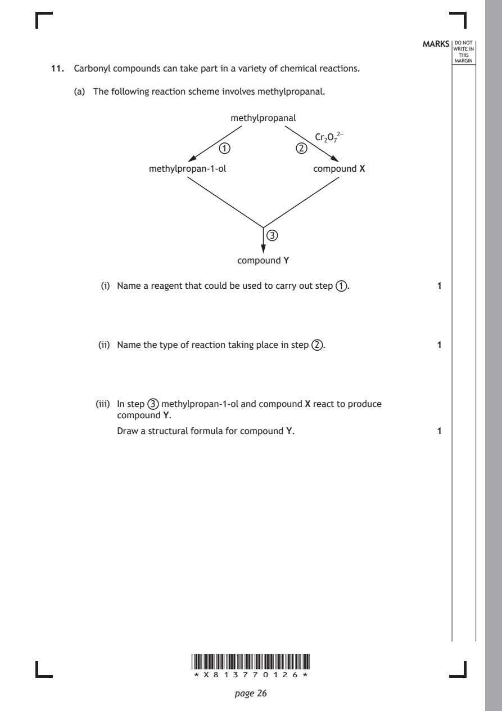
Selectable page text
MARKS _{W}^{D}_{R}^{O}_{I} _{T}^{N}OT
E IN
THIS
MARGIN
11. Carbonyl compounds can take part in a variety of chemical reactions.
(a) The following reaction scheme involves methylpropanal.
methylpropanal
Cr₂O₇²⁻
1 2
methylpropan-1-ol compound X
3
compound Y
(i) Name a reagent that could be used to carry out step 1 . 1
(ii) Name the type of reaction taking place in step 2 . 1
(iii) In step 3 methylpropan-1-ol and compound X react to produce
compound Y.
Draw a structural formula for compound Y. 1
*X813770126*
page 26PDF page 27
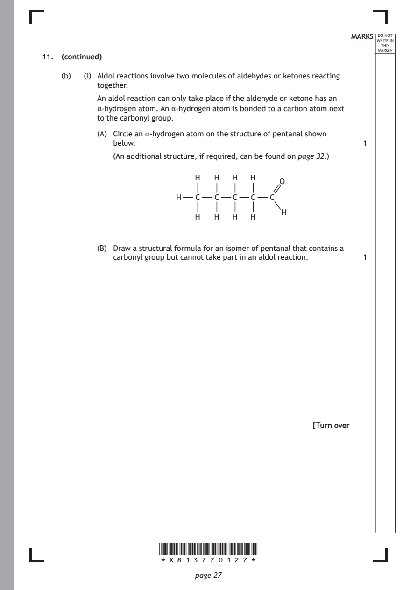
Selectable page text
MARKS _{W}^{D}_{R}^{O}_{I} _{T}^{N}OT
E IN
THIS
MARGIN
11. (continued)
(b) (i) Aldol reactions involve two molecules of aldehydes or ketones reacting
together.
An aldol reaction can only take place if the aldehyde or ketone has an
α-hydrogen atom. An α-hydrogen atom is bonded to a carbon atom next
to the carbonyl group.
(A) Circle an α-hydrogen atom on the structure of pentanal shown
below. 1
(An additional structure, if required, can be found on page 32.)
H H H H
O
H C C C C C
H
H H H H
(B) Draw a structural formula for an isomer of pentanal that contains a
carbonyl group but cannot take part in an aldol reaction. 1
[Turn over
*X813770127*
page 27PDF page 28
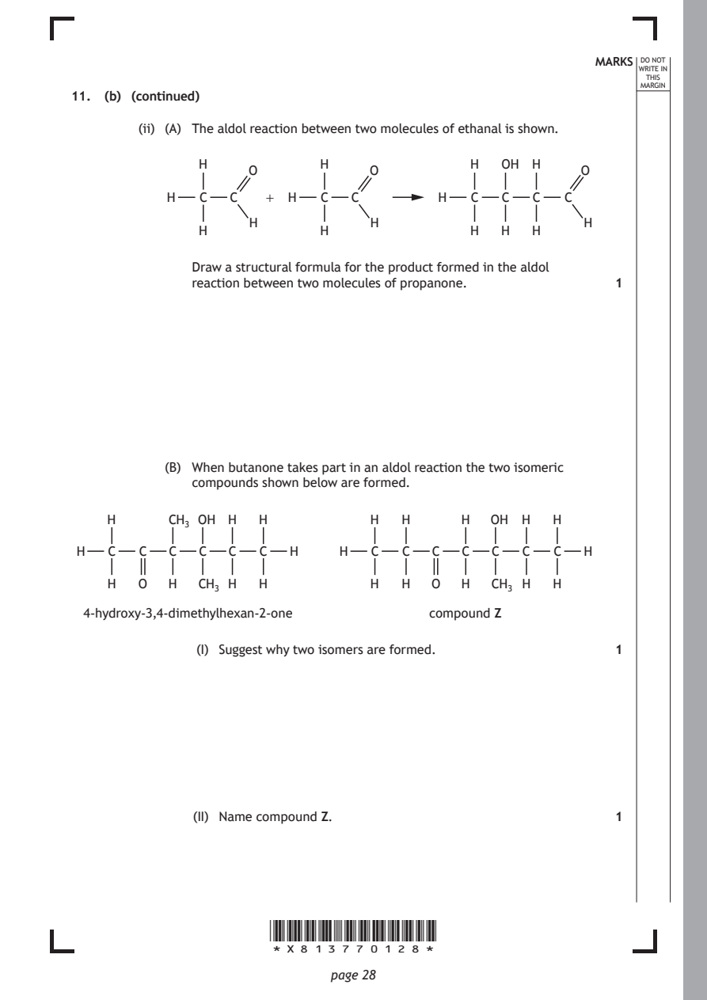
Selectable page text
MARKS _{W}^{D}_{R}^{O}_{I} _{T}^{N}OT
E IN
THIS
MARGIN
11. (b) (continued)
(ii) (A) The aldol reaction between two molecules of ethanal is shown.
H H H OH H
O O O
H C C + H C C H C C C C
H H H
H H H H H
Draw a structural formula for the product formed in the aldol
reaction between two molecules of propanone. 1
(B) When butanone takes part in an aldol reaction the two isomeric
compounds shown below are formed.
H CH₃ OH H H H H H OH H H
H C C C C C C H H C C C C C C C H
H O H CH₃ H H H H O H CH₃ H H
4-hydroxy-3,4-dimethylhexan-2-one compound Z
(I) Suggest why two isomers are formed. 1
(II) Name compound Z. 1
*X813770128*
page 28PDF page 29
Paper 2, Question 12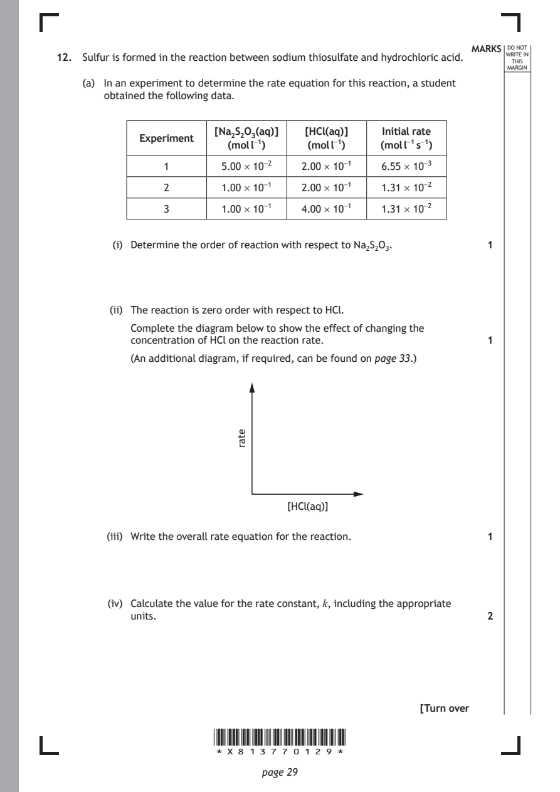
Selectable page text
MARKS _{W}^{D}_{R}^{O}_{I} _{T}^{N}OT
12. Sulfur is formed in the reaction between sodium thiosulfate and hydrochloric acid. E IN
THIS
MARGIN
(a) In an experiment to determine the rate equation for this reaction, a student
obtained the following data.
[Na₂S₂O₃(aq)] [HCl(aq)] Initial rate
Experiment
(mol l⁻¹) (mol l⁻¹) (mol l⁻¹ s⁻¹)
1 5.00 × 10⁻² 2.00 × 10⁻¹ 6.55 × 10⁻³
2 1.00 × 10⁻¹ 2.00 × 10⁻¹ 1.31 × 10⁻²
3 1.00 × 10⁻¹ 4.00 × 10⁻¹ 1.31 × 10⁻²
(i) Determine the order of reaction with respect to Na₂S₂O₃.
(ii) The reaction is zero order with respect to HCl.
Complete the diagram below to show the effect of changing the
concentration of HCl on the reaction rate.
(An additional diagram, if required, can be found on page 33.)
[HCl(aq)]
*X813770129*
page 29
etar
1
1
(iii) Write the overall rate equation for the reaction. 1
(iv) Calculate the value for the rate constant, k, including the appropriate
units. 2
[Turn overPDF page 30
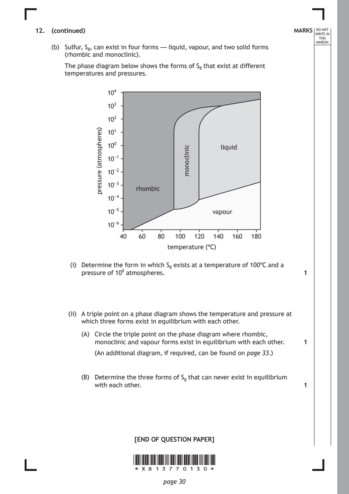
Selectable page text
12. (continued) MARKS _{W}^{D}_{R}^{O}_{I} _{T}^{N}OT
E IN
THIS
MARGIN
(b) Sulfur, S₈, can exist in four forms — liquid, vapour, and two solid forms
(rhombic and monoclinic).
The phase diagram below shows the forms of S₈ that exist at different
temperatures and pressures.
liquid
rhombic
vapour
temperature (°C)
*X813770130*
page 30
)serehpsomta(
erusserp
cinilconom
10⁴
10³
10²
10¹
10⁰
10⁻¹
10⁻²
10⁻³
10⁻⁴
10⁻⁵
10⁻⁶
40 60 80 100 120 140 160 180
(i) Determine the form in which S₈ exists at a temperature of 100°C and a
pressure of 10⁰ atmospheres. 1
(ii) A triple point on a phase diagram shows the temperature and pressure at
which three forms exist in equilibrium with each other.
(A) Circle the triple point on the phase diagram where rhombic,
monoclinic and vapour forms exist in equilibrium with each other. 1
(An additional diagram, if required, can be found on page 33.)
(B) Determine the three forms of S₈ that can never exist in equilibrium
with each other. 1
[END OF QUESTION PAPER]PDF page 31
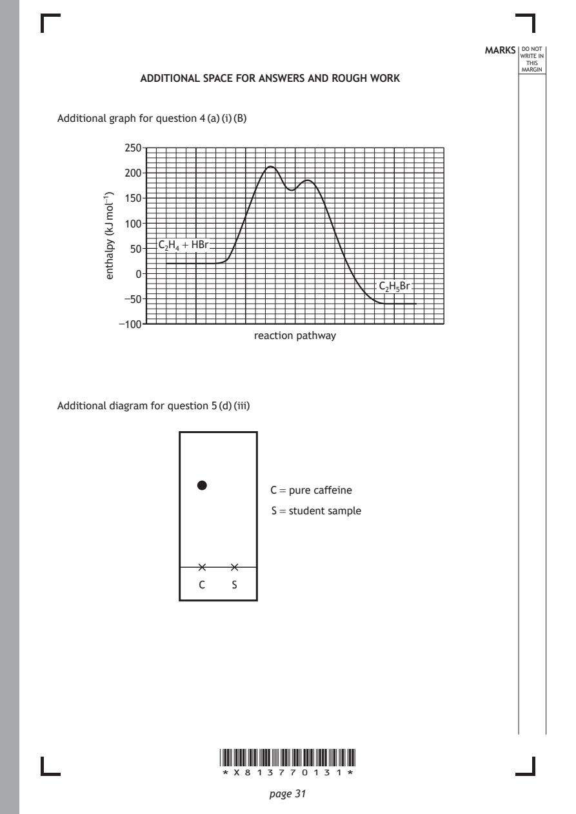
Selectable page text
MARKS _{W}^{D}_{R}^{O}_{I} _{T}^{N}OT
E IN
THIS
MARGIN
ADDITIONAL SPACE FOR ANSWERS AND ROUGH WORK
Additional graph for question 4 (a) (i) (B)
C₂H₄ + HBr
C₂H₅Br
reaction pathway
*X813770131*
page 31
_
)1
lomJk(
yplahtne
250
200
150
100
50
0
_
50
_
100
Additional diagram for question 5 (d) (iii)
C = pure caffeine
S = student sample
C SPDF page 32
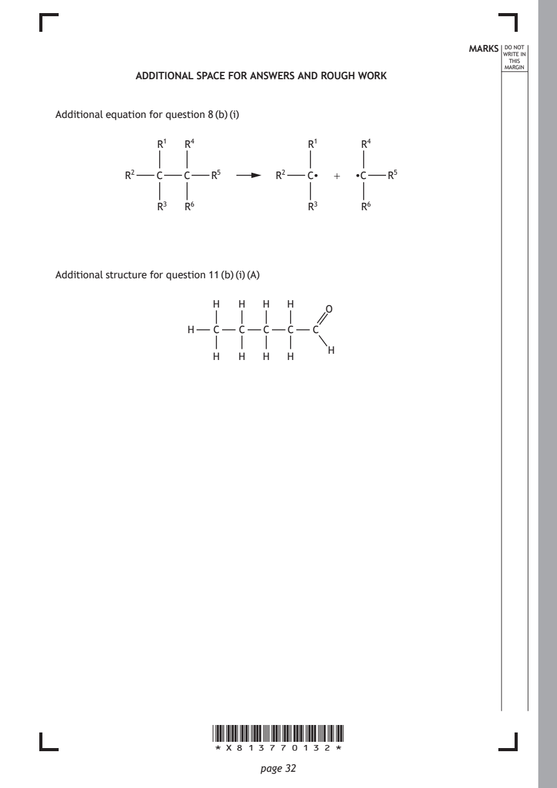
Selectable page text
MARKS _{W}^{D}_{R}^{O}_{I} _{T}^{N}OT
E IN
THIS
MARGIN
ADDITIONAL SPACE FOR ANSWERS AND ROUGH WORK
Additional equation for question 8 (b) (i)
R¹ R⁴ R¹ R⁴
R² C C R⁵ R² C• + •C R⁵
R³ R⁶ R³ R⁶
Additional structure for question 11 (b) (i) (A)
H H H H
O
H C C C C C
H
H H H H
*X813770132*
page 32PDF page 33
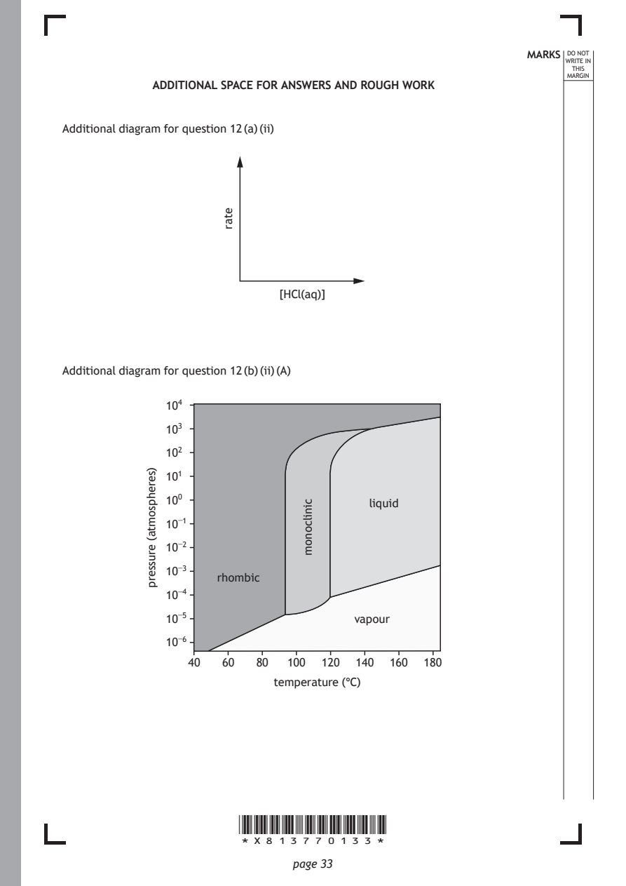
Selectable page text
MARKS _{W}^{D}_{R}^{O}_{I} _{T}^{N}OT
E IN
THIS
MARGIN
ADDITIONAL SPACE FOR ANSWERS AND ROUGH WORK
Additional diagram for question 12 (a) (ii)
[HCl(aq)]
*X813770133*
page 33
etar
Additional diagram for question 12 (b) (ii) (A)
liquid
rhombic
vapour
temperature (°C)
)serehpsomta(
erusserp
cinilconom
10⁴
10³
10²
10¹
10⁰
10⁻¹
10⁻²
10⁻³
10⁻⁴
10⁻⁵
10⁻⁶
40 60 80 100 120 140 160 180PDF page 34
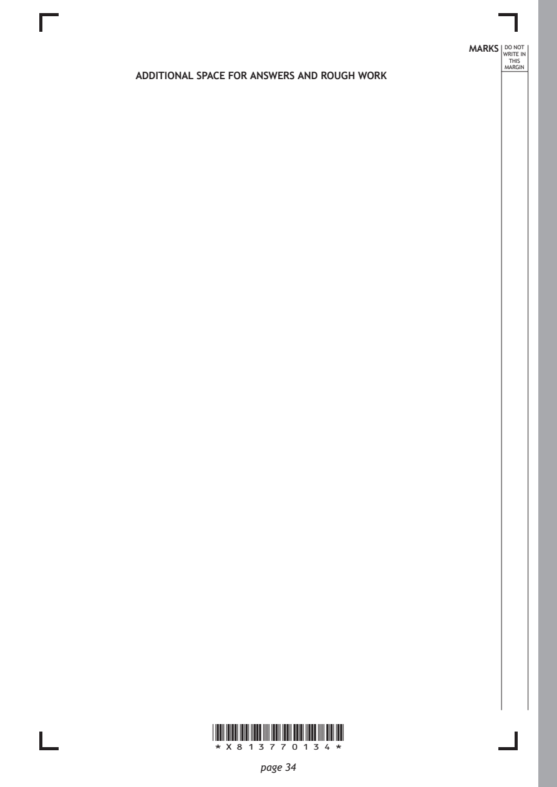
Selectable page text
MARKS _{W}^{D}_{R}^{O}_{I} _{T}^{N}OT
E IN
THIS
MARGIN
ADDITIONAL SPACE FOR ANSWERS AND ROUGH WORK
*X813770134*
page 34PDF page 35

Selectable page text
MARKS _{W}^{D}_{R}^{O}_{I} _{T}^{N}OT
E IN
THIS
MARGIN
ADDITIONAL SPACE FOR ANSWERS AND ROUGH WORK
*X813770135*
page 35PDF page 36
Selectable page text
[BLANK PAGE]
DO NOT WRITE ON THIS PAGE
*X813770136*
page 36